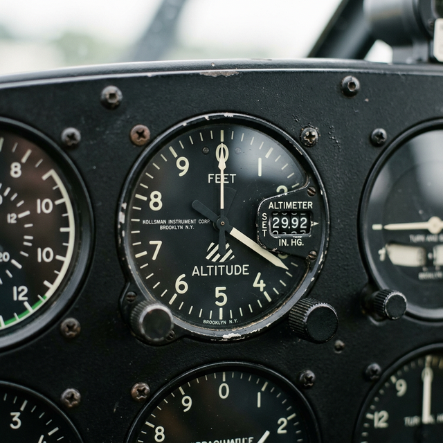

Altimeter/VSI/ASI basics
Module Objectives
- Explain the mechanical operation of an aneroid capsule within an altimeter.
- Calculate the altitude error resulting from an incorrectly set Kollsman window.
- Differentiate how the VSI measures pressure change versus how the altimeter measures absolute pressure.
Why Does This Matter?

A pilot departs a high-elevation airport. The actual local barometric pressure is a very high 30.42 inHg. However, the pilot carelessly leaves the altimeter set to standard 29.92. Because the altimeter receives no electrical data and relies purely on pressure physics, this 0.50 inHg error mathematically forces the altimeter to read approximately 500 feet lower than the aircraft's true physical altitude. During a night departure over mountainous terrain, that uncorrected 500-foot offset is completely fatal. For a technician, validating the strict accuracy of the Kollsman window gearing is a life-critical procedure.
What You Need To Know
Altimeter Mechanics
A conventional mechanical altimeter measures barometric altitude by actively sensing changes in static pipeline pressure through a sealed aneroid capsule (a flexible corrugated metal pancake).
- As the aircraft climbs, the ambient cabin and static pressure decreases.
- The sealed capsule physically expands because the pressure outside it is now lower.
- This microscopic expansion pushes a complex system of magnifying gears, ultimately turning the altitude pointer on the dial.
- The Kollsman Window: The small sub-dial where the pilot inputs the local barometric pressure. Turning the knob physically rotates the entire gear mechanism, shifting the baseline altitude reference.
- The Math: Every 1.0 inHg of tuning error equates to exactly 1,000 feet of altitude indication error. (e.g., 29.92 vs 30.92 = 1,000 ft difference).
Vertical Speed Indicator (VSI)
While the altimeter measures absolute pressure, the VSI strictly measures the rate of change of static pressure, displaying feet per minute (fpm).
- The static line feeds directly into a flexible diaphragm inside the VSI.
- The static line also feeds into the rigid casing *surrounding* the diaphragm, but it must pass through a highly precision calibrated leak (a microscopic capillary tube).
- When climbing, pressure inside the diaphragm drops instantly. Pressure inside the casing drops slowly (delayed by the leak).
- The temporary pressure difference forces the diaphragm to contract, registering a climb on the dial. When level, the pressures equalize to zero completely.
Airspeed Indicator (ASI)
The ASI measures indicated airspeed exclusively by manipulating the vast differential between raw pitot (ram) pressure and ambient static pressure.
- High airspeed rams massive pressure into the instrument diaphragm.
- Static pressure is piped into the casing surrounding the diaphragm to act as the baseline reference.
- The expanding diaphragm physically drives the speed needle. The higher the ram pressure relative to the static pressure, the higher the registered knot readout.
System Visualization
graph TD
A[Static System Pressure Drops due to Climb] --> B{How do the Instruments React?}
B -->|Altimeter| C[Aneroid Capsule Expands]
C --> D[Gears turn needle to indicate higher altitude]
D --> E[Needle holds steady at new altitude]
B -->|Vertical Speed Indicator VSI| F[Diaphragm pressure drops instantly]
F --> G[Casing pressure drops slowly through calibrated leak]
G --> H[Temporary differential forces needle to show Climb FPM]
H --> I[When level, pressures equalize, needle returns to ZER0]
style E fill:#1e40af,stroke:#1e3a8a,stroke-width:2px,color:#fff
style I fill:#166534,stroke:#14532d,stroke-width:2px,color:#fff
On The Job
When investigating a pilot complaint of a "sluggish" or "lagging" VSI, immediately inspect the tiny capillary tube or restriction fitting mounted on the back of the instrument casing. Microscopic dust, lint, or moisture freezing across that calibrated leak will vastly alter the bleed-off rate, rendering the instrument wildly inaccurate or completely seizing it at a false climb reading. Furthermore, altitude errors must be tested across the entire operational range (e.g., from -1,000 feet to +20,000 feet) to prove the complex aneroid gears haven't worn down non-linearly over decades of service.
Reference Terms
Altimeter Setting
The local barometric pressure in inches of mercury (inHg) entered into the altimeter's Kollsman window before flight so the instrument reads accurate altitude above mean sea level.
Vertical Speed Indicator (VSI)
A flight instrument that measures and displays the rate of change of barometric altitude in feet per minute (fpm) by comparing the static pressure entering a chamber with a calibrated leak rate.
Altimeter Operation
An altimeter measures barometric altitude by sensing changes in static (atmospheric) pressure through an aneroid capsule; as altitude increases, pressure decreases, and the capsule expands, rotating gears to display altitude in feet or meters referenced to the set datum.
Basic-T Instrument Arrangement
The FAA-standard 'Basic T' layout places four primary flight instruments in a T pattern: ASI (upper-left), AI (upper-center), ALT (upper-right), and heading indicator (lower-center).
Aneroid Capsule
A sealed, highly flexible metallic chamber that physically expands or contracts in direct response to surrounding static pressure changes.
Kollsman Window
The small barometric sub-dial on an altimeter allowing the pilot to manually calibrate the instrument to localized atmospheric pressure fields.
Calibrated Leak
An ultra-precise capillary restriction on a VSI casing that deliberately delays pressure equalization, generating the required differential to calculate climb rates.
Indicated Airspeed
The raw, uncorrected speed registered on the ASI dial driven purely by the differential force between pitot ram pressure and static ambient pressure.
Assessment Check
The altimeter utilizes expanding aneroid capsules to measure absolute pressure; the VSI utilizes a calibrated leak to measure the rate of pressure change; an unchecked Kollsman window error of 1 inHg induces a massive 1,000-foot altitude discrepancy. --- ---